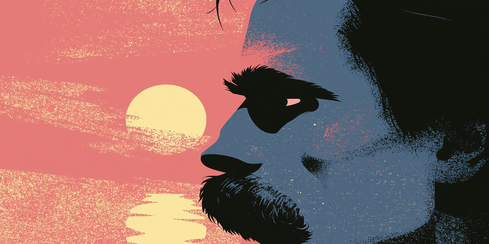

Friedrich Nietzsche · Grammar Examination · Part III
THETWILIGHTOF ERRORS
Parts I and II were a preparation. This is the examination of the will.
Advanced grammar awaits — subjunctive, inversion, ellipsis, nominalisation, aspect.
Only the strongest survive.

Advanced Level — Five Trials — Fifteen Questions — No Mercy
PROGRESS0 / 15
I
The Subjunctive Mood
Wishes, demands, hypotheticals — the grammar of the unreal
The subjunctive is rare in modern English but essential in formal and literary writing. German learners often confuse it with the indicative or use modal verbs instead. Choose the correct form.
Nietzsche insisted that every philosopher ___ willing to question the very ground beneath their feet.
💡 After verbs of demand, insistence, or recommendation — insist, demand, suggest, require — English uses the mandative subjunctive: bare infinitive "be", regardless of person. "He insisted that she be present." This does NOT backshift to "was."
If only Nietzsche ___ alive to see how broadly his ideas spread — he would be horrified by some interpretations.
💡 "If only" triggers the past subjunctive. Formally, this is always "were" for all persons — not "was" — though "was" is common in informal speech. Compare: "I wish I were taller."
His publisher recommended that the book ___ immediately, before public opinion turned against it.
💡 Mandative subjunctive in the passive: "be published" — not "is published" or "was published." The subjunctive form is always the base verb, even in passive constructions. American English uses this far more than British English.
II
Fronting & Inversion
Never had grammar been so dramatic — emphasis through word order disruption
Negative adverbials at the beginning of a sentence force subject-auxiliary inversion. This is a literary and formal device — and a common advanced error. Choose the grammatically correct inverted sentence.
Never have I read a philosopher who wielded language as a weapon so precisely as Nietzsche did.
— A literary admirer (demonstrating inversion)
Choose the correctly inverted sentence:
💡 After negative/restrictive adverbs — rarely, seldom, never, hardly, scarcely, no sooner — at the start of a sentence, auxiliary + subject order is required: "Rarely did he..." Use "do/did" if there's no other auxiliary.
Choose the correctly inverted sentence:
💡 "Not only... but also" requires inversion in the first clause: "Not only did he reject..." Note the second clause (but he also) does NOT invert. This is a very common mistake even at advanced levels.
Choose the correctly inverted sentence:
💡 "So + adjective + verb + subject + that" — the adjective fronts with "so," followed by inverted auxiliary+subject: "So cold was the night..." / "So great was his influence..."
III
Gerunds vs. Infinitives
The difference can change the meaning entirely — a treacherous distinction
Some verbs take a gerund (-ing), some take an infinitive (to + verb), and some take both — but with a change in meaning. This is one of the most difficult areas for German learners. Choose carefully.
Nietzsche stopped ___ Wagner's music after their philosophical falling-out in 1878.
💡 "Stop + gerund" = cease an activity (he no longer did it). "Stop + infinitive" = pause in order to do something else — "He stopped to admire the view" means he paused and looked. Here, Nietzsche permanently ceased admiring Wagner.
Nietzsche remembered ___ Wagner as a young man, and the memory haunted him for life.
💡 "Remember + gerund" = recall a past event (he has the memory of it). "Remember + infinitive" = not forget to do something in the future ("Remember to lock the door.") Here, he recalls the past event of meeting Wagner.
Despite his illness, he went on ___ prolifically until his mental collapse in 1889.
💡 "Go on + gerund" = continue the same activity. "Go on + infinitive" = move on to a new activity ("He finished the chapter, then went on to write a new one.") Here, he continued the same act of writing — so gerund is correct.
IV
Cleft Sentences
It is emphasis that the Übermensch demands — splitting for stress
Cleft sentences split a simple sentence into two clauses to emphasise one element. There are two main types: it-clefts ("It was X that...") and wh-clefts ("What he wanted was..."). Choose the correct form.
What Nietzsche truly sought was not power over others, but mastery over oneself.
— Wh-cleft example (emphasis on "what")
Emphasis required on Lou Salomé: Nietzsche fell deeply in love with Lou Salomé in 1882.
💡 It-cleft structure: "It was [X] [relative clause]". The preposition "with" must stay with "whom" in formal register: "with whom he fell in love." Option B drops the preposition; option C inverts subject and object; option A uses "who" where "whom" is needed with a stranded preposition.
Choose the correct wh-cleft that naturally emphasises Nietzsche's true goal:
💡 Wh-cleft structure: "What + subject + verb + was + [focus element]". No inversion after "what." Option A inverts incorrectly (question form). Option C uses "that" — only "what" introduces this cleft type. Option D inverts the subject.
Emphasis required on in Turin: His mental collapse happened in Turin, not in Basel.
💡 In it-clefts, the connector is always "that" — regardless of whether the emphasised element is a place, time, person, or thing. Never use "where," "which," or omit it entirely in a formal it-cleft.
V
Error Identification
Locate the single grammatical error in each sentence — the hardest trial
Each sentence below contains exactly one grammatical error. Identify which underlined portion (A, B, C, or D) is incorrect. This is the format of the TOEFL and Cambridge Advanced examinations.
Nietzsche's philosophy, having been misread(A) for over a century, continues to provoke(B) fierce debate — not only among(C) professional philosophers but between artists and writers(D) as well.
💡 The error is in the correlative conjunction: "not only... but also" must be paired with the same preposition on both sides. "Among... but between" mixes prepositions incorrectly. Correct: "not only among professional philosophers but also among artists and writers."
It is widely accepted(A) that Nietzsche, despite to suffer(B) from debilitating migraines, managed to produce(C) some of the most provocative prose(D) in European intellectual history.
💡 "Despite" is a preposition — it must be followed by a noun phrase or gerund, never by an infinitive. Correct: "despite suffering from..." or "despite his suffering from..." — never "despite to suffer."
Had Nietzsche been able to(A) oversee the publication of his collected works, he would certainly have(B) rejected the nationalist framing imposed on(C) his writings by those who misunderstood(D) him most profoundly, most notable his sister Elisabeth.
💡 The error is "most notable" — an adjective is used where an adverb is required. The correct form is "most notably", which modifies the clause that follows. Adjectives modify nouns; adverbs modify verbs, adjectives, and clauses.
—
FINAL SCORE · PART III
— / 15
One Final Task
Face Your Own Twilight
Nietzsche wrote about confronting hard truths rather than comfortable illusions. Write a short paragraph (60-100 words) about a belief or habit you have questioned or abandoned, using at least one example of inversion, ellipsis, or the subjunctive from this lesson.